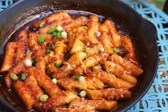

Tteokbokki

Description
It is made with rice cakes, fish cakes, boiled egg and
seasoned with chili paste. The rice cakes are chewy and
tender.
It looks super spicy and originally, it is! But you can
control the amount of chili paste.
Ingredients
- 3 cups of water
- 2 dried anchovies
- 3 tbs chili paste
- 2 tbs white sugar
- onion
- 2 Korean fish cakes, sliced
Steps
-
Combine water and anchovies in a saucepan and bring to a
boil. Cook for 10 minutes. Remove anchovies.
-
Combine chili paste and sugar in a bowl to make the sauce.
-
Add rice cakes and onion to th anchovy water in the
saucepan. Add sauce.
-
Bring to a boil and cook for 5 minutes, stirring
occasionally. Boil fro 3 minutes more